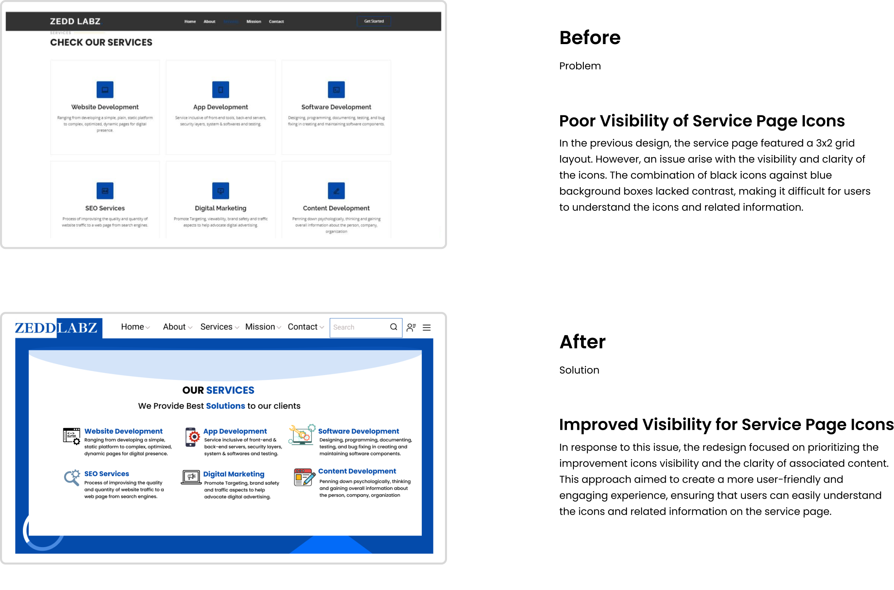
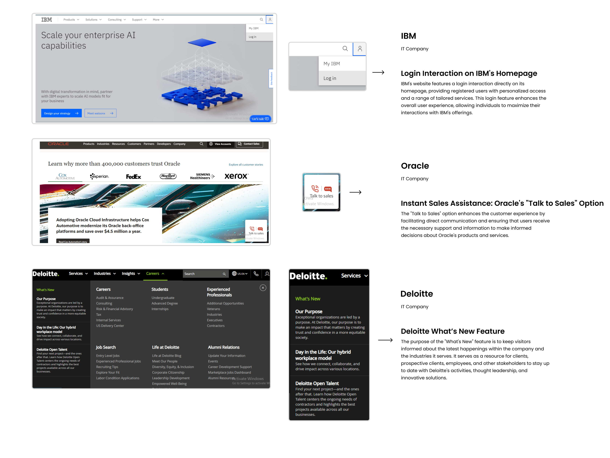
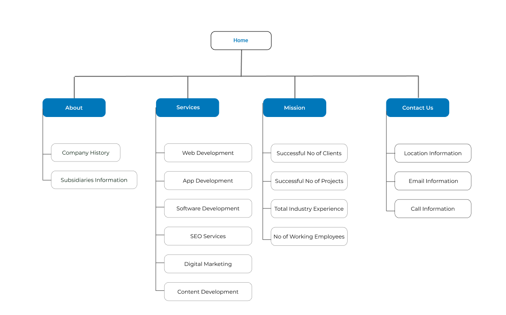
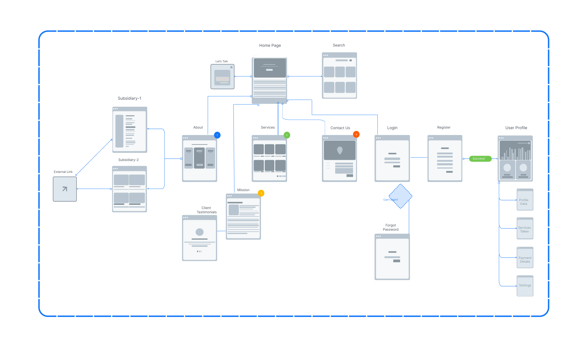
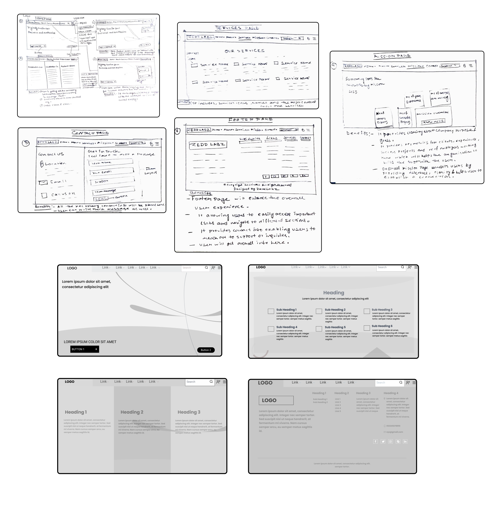

The Design Brief
Zedd Labz, an IT startup, faced a challenge of having a weak online presence prior to this project. This hindered potential clients from learning about the company, making inquiries, or accessing information on their services. To address this, I collaborated with Zedd Labz to redesign their existing website. The main objectives were to elevate their brand, increase visibility, and enable effortless exploration of their services by customers.
Problems
- Outdated Design: The previous website design appeared outdated, potentially undermining the perception of trust and security for first-time visitors.
- Trust and Security Concerns: The outdated design raised concerns among users regarding the trustworthiness and security of the website.
- Poor Visibility of Homepage Information: The previous design failed to present the information in the homepage section clearly, hindering users' ability to quickly grasp the key details. This section serves as the first impression for users and influences their decision to explore further.
- Inefficient Content Management: The outdated design might have made it challenging to update and manage content effectively. This can lead to stale or outdated information on the website, which can confuse and frustrate users seeking accurate and up-to-date information.
Goals
- Modernize the Design: Update the website's overall design to eliminate the outdated appearance, creating a modern and visually appealing interface that instills trust and confidence in first-time visitors.
- Enhance Trust and Security: Implement design elements, such as clear calls to action and visible security indicators, to address user concerns and establish a sense of trust and security throughout the website.
- Optimize Homepage Information Visibility: Redesign the homepage section to ensure that key information is prominently displayed and easily understandable, enabling users to quickly grasp the essence of the website and encouraging them to explore further
- Improve User Experience: Focus on enhancing the overall user experience by improving navigation and ensuring seamless interactions, resulting in a positive and engaging experience for all website visitors.


User Research
I conducted a survey among individuals experienced in IT services and performed in-depth interviews with 5 participants. This comprehensive research approach involved collecting data from 120 survey responses and gathering valuable perspectives from the interviews.
Competitive Analysis
Additionally, I conducted a comprehensive analysis of several websites belonging to other IT companies. Based on the analysis, I derived the following key takeaways:
- Design Inspiration: Gained valuable insights into design elements and aesthetics for creating an appealing website for Zedd Labz.
- Functional Enhancements: Identified user-friendly functionalities and interactive features to improve the user experience on the website.
- Content Strategy Refinement:
Refined the content strategy by studying successful IT company websites, ensuring effective communication of key messages and offerings.

Ideation
Based on my research analysis i found out that Zedd Labz's website should include certain key elements. These elements include an engaging and user-friendly design, informative content, a showcase of different services, successful projects, client testimonials, visible contact information, integration with social media platforms, and opt-in forms for lead generation. By implementing these features, Zedd Labz can attract potential clients, demonstrate its expertise, and foster effective communication.
After the ideation phase, the Zeddlabz team expressed satisfaction with the proposed features and emphasized the need for a quick completion of the project within the given timeline. As a result, without going deeper into reseach, the focus shifted towards creating the sitemap and user flow. This approach aimed to provide a clear and concise structure for the website.
Sitemap
I have developed a site map to organize the structure of the website, ensuring a logical flow and easy navigation for users. The site map serves as a blueprint, outlining the different sections and pages that will be included on the website. By creating a well-structured site map, I am establishing a clear hierarchy and organizing the content in a way that aligns with the goals and objectives of the website. This will ultimately enhance the user experience, making it easier for visitors to find the information they are seeking and engage with the website effectively.

User Flow
I have designed an user flow to map out the intended journey of website visitors. The user flow outlines the sequence of steps or actions that users are likely to take as they interact with the website. It visualizes the path from the initial landing page to subsequent pages or actions, such as exploring services, reading content, or completing desired tasks. By creating an user flow, I am able to anticipate and optimize the user experience, ensuring that visitors can easily navigate the website, find relevant information, and accomplish their goals efficiently.

Wireframes
I have created wireframes to outline the website's layout and structure. These visual blueprints depict the placement of essential elements like headers, navigation menus, content sections, and interactive features. Wireframes help me plan the visual hierarchy, user interface, and overall user experience, ensuring the design aligns with the website's goals and optimizes usability. They serve as a valuable reference throughout the visual design and development process, promoting consistency across pages.

UI Screens
As the website is still in the development process, I am unable to attach all the UI screens. However, I have attached some of the final UI screens that have been completed. These screens showcase the visual design and layout of key sections of the website.

Prototype
Impact
In just four weeks, my designs have had a profound impact on the ongoing website development. By prioritizing user-centric design, intuitive navigation, and visual appeal, I've shaped the website's overall look and feel. User engagement has improved, and a cohesive brand identity has been established. My team has expressed appreciation for my design work, and I'm thrilled to have provided a strong foundation for the development team, ensuring a visually appealing and user-friendly website.
Reflection
My first UI/UX design internship was a valuable learning experience. Working on real projects alongside the design team, I gained practical skills in user research, wireframing, and interface design. I discovered the importance of collaboration and effective communication. Reflecting on the experience, I could have dedicated more time to understanding user behaviors and seeking user feedback. Nevertheless, the internship provided a solid foundation and ignited my passion for continuous learning in UI/UX design. I am grateful for the opportunity and excited to further develop my skills in this field.